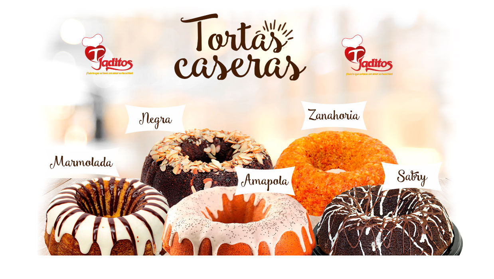
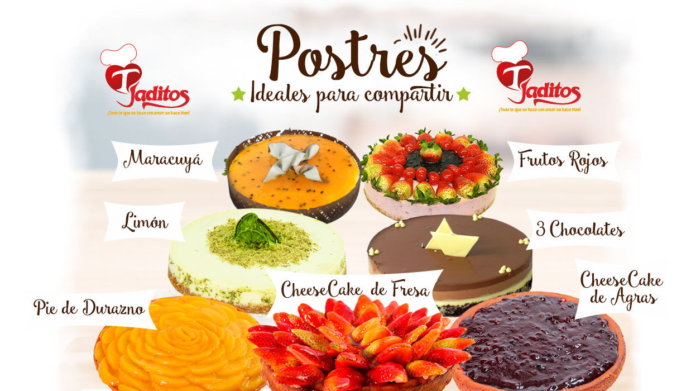

☎ Domicilios: 6611797
Dirección: Av 6Bis 28N-80 Cali-Colombia


- 
- 
Mesa de directivos
Gerente General y accionista
Andres Castro
Aparte de ser accionista, también es el encargado de toda la empresa. Él es la persona que toma las decisiones definitivas de la empresa, siempre velando por el buen funcionamiento interno al lado de su jefe de producción y de ventas.
Accionista y contadora
Maria Luisa Velez
Además de ser accionista de la empresa, ella es la persona encargada del area contable de la empresa. A tarvés de su grupo de trabajo, ella se encarga de llevar las cuentas al día para tener un control absoluto del capital y rentabilidad de la misma.
Accionista
Fernando Ortiz
Es el tercer accionista y además representante de una sociedad llamada Grupo OSSA S.A.S. Esta compañia aporta también al capital financiero de la empresa y está siempre apoyando las decisiones internas de la empresa.
Conoce un poco de Los Tejaditos
Los Tejaditos es una pasteleria que nació en el año 1986 con el slogan "Todo lo que se hace con amor se hace bien". Desde entonces ha ofrecido un producto casero, diferente a de los demás. Nosotros ofrecemos un producto hecho con amor, la receta de la abuela es el secreto de nuestro sabor. Somos una familia con mucha tradición en nuestra ciudad y siempre nos preocupamos por ofrecer el mejor servicio y la mejor calidad a nuestros clientes.
Estamos ubicados en Cali con ocho puntos de venta. Nos encontramos en diferentes almacenes La 14 de la ciudad ademas de dos almacenes Cañaveral situados en el sur. Contamos con un amplio catálogo de tortas y acompañantes para el gusto de todos. Contamos con una linea Premium para compartir con esas personas especiales y en los mejores momentos. También ofrecemos una línea Clásica para compartir con esos compañeros de trabajo, es el producto ideal para celebrar esos momentos casuales en la vida. También ofrecemos una línea Casera perfecta para disfrutar en cualquier momento del día. Los postres y los acompañantes de sal y de dulce son el regalo perfecto para esa persona especial en tu vida.
A lo largo de nuestra historia nos hemos caracterizado por nuestra excelente calidad con el producto. Esto se ha visto reflejado en diversos premios que nos han otorgado. En el año 2015, obtuvimos el premio a la mejor vitrina navideña gracias a nuestra excelente presentación de nuestros productos. En el año 2013, obtuvimos un reconocimiento nacional al recibir el galardón, en ese año, por tener la mejor torta de chocolate del país. Siempre nos hemos caracterizado por nuestro servicio al cliente y por ello hemos sido reconocidos en varios años por la revista Portafolio, como una empresa dedicada a la mayor satisfacción del público.